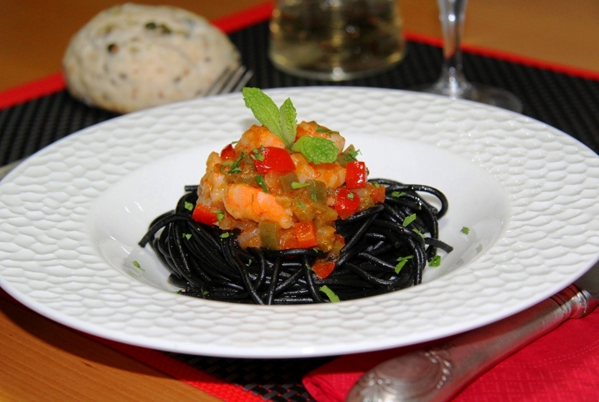

Aquí encontrarás interesantes datos de la historia tras la fórmula secreta y un lugar donde compartir experiencias
Las quiches siempre son un éxito y son mucho más sencillas de hacer de lo que parece. Para ir calentando motores, os proponemos esta de quesos y nueces, aunque aparecerán más en la lista
